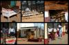
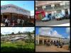
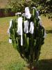

(top left) Watch Doctor – Prop Mr. KB Ndau
(top center) Changu Shoe Shine & Repair
(top right) Dr. Yusifu Herbal Clinic
(bottom left) Tikulemba Vidindo – Property on Owners Risk (aka…rubber stamp maker)
(bottom center) Botique – Nchesinchesi Furniture – Roofing, Ceiling, Ward Robes, Kitchen Units, Dining Sets, Sofa Sets,Lounge Sets, etc. “Durability is our no. 1 priority”
(bottom right) Tailor
Daily Life
Anything and Everything
Submitted by marissa on Mon, 2006-08-21 21:14.
Categories:
»
- Login to post comments
Woodcarving Market on the road to Nkhata Bay
Submitted by marissa on Mon, 2006-08-21 21:07.Categories:
»
- Login to post comments
Taifa Textile Market
Submitted by marissa on Mon, 2006-08-21 21:04.Categories:
»
- Login to post comments
Advertising
Submitted by marissa on Mon, 2006-08-21 21:01.Browsing advertising is one of our favorite forms of entertainment around here. We should adopt some of their charm back home.
Categories:
»
- Login to post comments
Around Town - Mzuzu
Submitted by marissa on Mon, 2006-08-21 14:20.
(top left) Mzuzu Business Center - Internet, Coffee, Fax, Typing, Drinks, Cakes, Snacks
(top right) Zikomo Restaurant ("Thank You Restaurant"), Agricultural Equipments LTD, and Ambulance
(bottom left) Market
(bottom right) Northern Region Chamber of Commerce & Industry, Malawi Union of Savings and Credit Co-Operatives, Drycleaners
Categories:
»
- Login to post comments
The Strength of Souls
Submitted by marissa on Wed, 2006-07-12 19:59.I am deeply impressed by the strength of people’s souls in this place. Jon and I are have settled down enough, that we interact with Malawians on a daily basis and are developing many friendships along the way. We have noticed that as we get more and more integrated into the community, death seems to take a stronger and stronger presence. Just the other day we realized that it had been more than 2 days since hearing about the death of one person or another connected in some way to our friends or colleagues. Learning to deal with death on a daily bases is hard, but what I find more challenging is learning to grasp how my Malawian friends go on living life with such joy, such strong spirits, always so helpful, always with a smile.
Categories:
»
- marissa's blog
- Login to post comments
- Read more
Update: Backyard Landfill
Submitted by marissa on Wed, 2006-07-12 19:49.Categories:
»
- Login to post comments
Why Not!?
Submitted by marissa on Wed, 2006-07-12 19:43.
...a traditional Malawian clothesline. Yes, this is how we do our laundry...not a bad idea for you Arizona folk!
Categories:
»
- Login to post comments
Backyard Landfills
Submitted by marissa on Thu, 2006-03-30 13:09.I would challenge my friends and family back in the states to try this one out…
Instead of putting your trash out on the street for pick-up next week, dig a small hole in your backyard and start dumping your waste there. It will be amazing to see how quickly your consumption habits change and how environmentally conscious you become.
As you can guess, this is the system for garbage disposal in Malawi. Any trash we make, literally, make a landfill of our backyard. In this light, composting is an absolute must. Any organic waste gets dumped onto the compost pile, which will then be used as fertilizer in the garden where we will grow many of our own veggies and herbs. Soda and beer bottles are all recycled, so much so that, cans aren’t stocked much at the stores and you get a refund on new beverage purchases when you return used bottles. What a brilliant system! Other recycling services do not exist, so we end up making all sorts of consumer decisions to minimize the size of the landfill in our backyard.
Categories:
Thoughts...one month in Malawi
Submitted by marissa on Tue, 2006-03-28 12:00.This week Jon and I are finishing the website design for OIBM a micro-finance bank servicing the poor. It's been really fun working with them b/c it's a crew of really motivated Malawians and I happen to really believe in the transforming nature of the services they are offering to the poor.
I'm also preparing to head out on my art safari next week. For me, this means practicing with watercolors and some other materials, doing some drawing studies, etc. I'm really excited to see more of the country and work with other artists.
I feel like I have my hands and my mind in a little bit of everything (art, humanitarian aid distribution, web design, micro-enterprise, jewelry making research, bird watching, and peanut butter making!). Obviously, there are a lot of needs here in Malawi with the challenges of disease and poverty. I'm not sure yet how to feel about prioritizing my time while I'm here. On the one hand, a year is a very short time to see any of my contributions materialize in a major way. I feel like I need to do "good work" (like volunteering at the hospital or public schools), but then I remember what I learned through my teaching experience, and that is that I must follow my passion and my giftings. I think those things are art and business (income-generating activities). I'm praying that God will show me ways to use these things to bless Malawians while I'm here. There have been little windows of opportunity...like exchanging painting classes for wood carving lessons with some of the local carvers...or maybe teaching jewelry making techniques to women in villages nearby so they can sell jewelry to tourists. I have plenty of ideas but getting the ball rolling and trying to get more involved in the local community is a slow process...I need patience, otherwise I start to feel discouraged, like I'm not doing anything useful.
Categories:
»
- marissa's blog
- Login to post comments
- Read more
 Recent Posts
Recent Posts